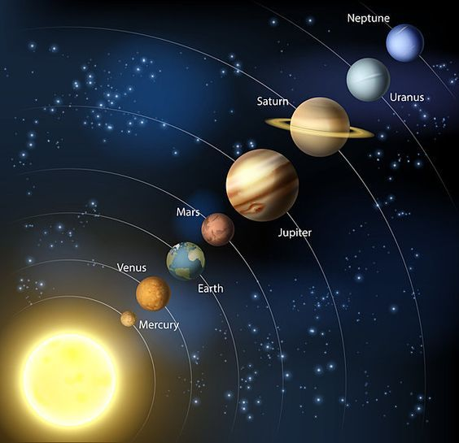

Mercury
Mercury is the smallest and innermost planet in the Solar System. It has no natural satellites and is named after the Roman messenger god.
Planets are celestial bodies that orbit a star, such as our Sun.
Mercury is the smallest and innermost planet in the Solar System. It has no natural satellites and is named after the Roman messenger god.
Venus is the second planet from the Sun and is often called Earth's "sister planet" due to their similar size and mass.
Earth is the third planet from the Sun and the only known planet to support life. It has a diverse range of ecosystems and is home to millions of species.
Mars is the fourth planet from the Sun and is often referred to as the "Red Planet" due to its reddish appearance. It has a thin atmosphere and is home to the largest volcano in the Solar System, Olympus Mons.
Jupiter is the largest planet in the Solar System and is known for its prominent bands of clouds and its Great Red Spot, a giant storm that has been raging for centuries.
Saturn is the second-largest planet in the Solar System and is famous for its extensive ring system, which is made up of countless small particles of ice and rock.
Uranus is the seventh planet from the Sun and is known for its unique blue-green color, which is caused by the presence of methane in its atmosphere. It has a tilted axis, which causes it to rotate on its side.
Neptune is the eighth and farthest planet from the Sun in the Solar System. It is known for its deep blue color and strong winds, which can reach speeds of up to 1,200 miles per hour.

Exoplanets are planets that orbit stars outside of our Solar System. Thousands of exoplanets have been discovered, and they come in a wide variety of sizes, compositions, and orbital characteristics. The study of exoplanets is a rapidly growing field in astronomy, as scientists seek to understand the diversity of planetary systems in the universe and the potential for habitable worlds beyond our own.